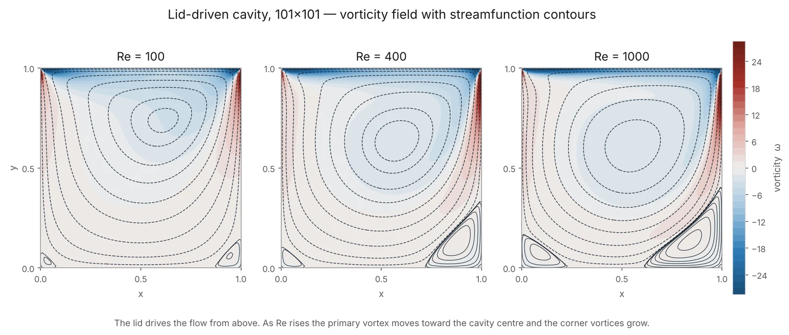

Finite-difference solvers, from the discretisation up
Six modules written without CFD libraries, each scheme derived by hand, implemented in Python and then tested against something that could prove it wrong: the linear advection equation, spectral analysis of numerical error, two-dimensional advection, Burgers’ equation, Poisson’s equation and a lid-driven cavity in vorticity–streamfunction form.
- At Re = 100 the cavity matches the Ghia et al. (1982) benchmark to 0.02 % in vortex strength.
- At Re = 400 and 1000 it misses by 6.6 % and 16.3 %, as the scheme’s modified equation predicted before the error was measured. Extrapolating the error away recovers the benchmark to 0.04 % and 1.0 %.
- At Re ≥ 5000, two grids agree with each other while both sit far from the benchmark: a grid-independence study would have certified a wrong answer.
Code and write-up: sammyjankis19302/cfd-from-scratch

